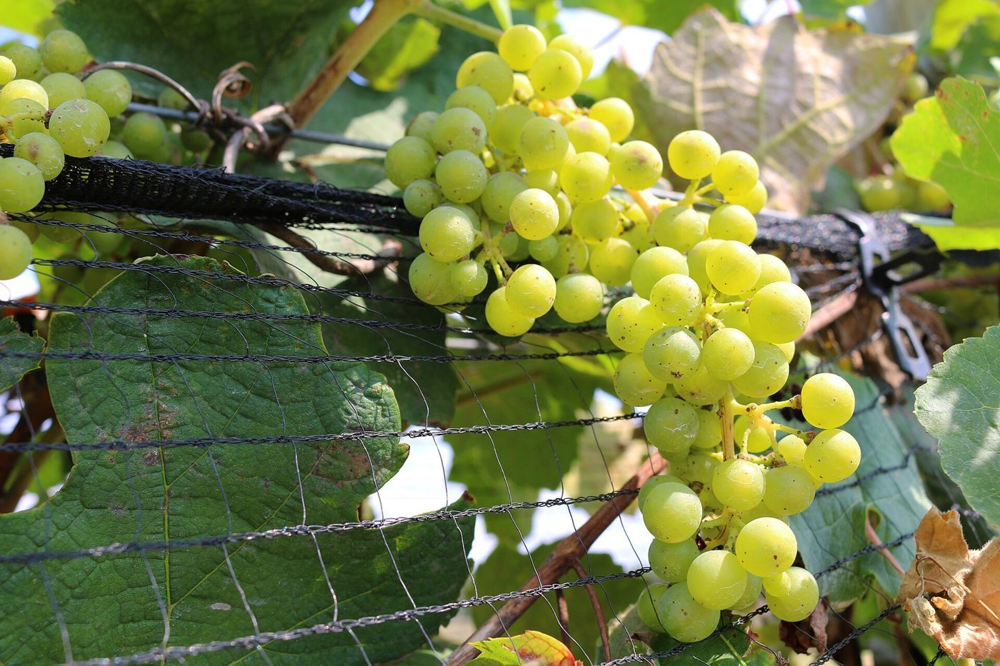

店のこと
熱気球の部位の配置図
お店の詳しい情報は準備中です。ここでは、制作側が考えたデザインの考え方を紹介します。


制作側の連想
番号は、部位の番号
ホームの図にある1〜6の番号は、それぞれ熱気球の部位の名前に対応します。熱気球の部位を図にしたもので、制作側の連想です。お店の理念・由来とは無関係で、実際の機体の仕様を示すものでもありません。
1球皮
熱い空気をためて浮かぶための、気球のいちばん大きな布の袋の部分。
2開閉弁
球皮のいちばん上にあり、中の熱い空気を逃がして降りるときに開く部分。
3吊り索
球皮とバスケットをつなぐ、丈夫なひもやワイヤーの部分。
4バーナー
球皮の中へ炎で熱を送り込む、火を出す装置。
5バスケット
人や荷物を乗せる、籐などで編まれた籠の部分。
6燃料タンク
バーナーへ送る燃料を入れておく、円筒形の容器。
写真(イメージ)
写真(イメージ)



写真はイメージです。お店のものではありません。
確認できていること
お店の情報
| 屋号 | ブーランジェリーカフェジャルダン |
|---|---|
| 所在地 | 〒803-0186 福岡県北九州市小倉南区新道寺４１７−５ |
| SNS | Instagram @boulangeriecafe.jardin |
| そのほか | 準備中 |